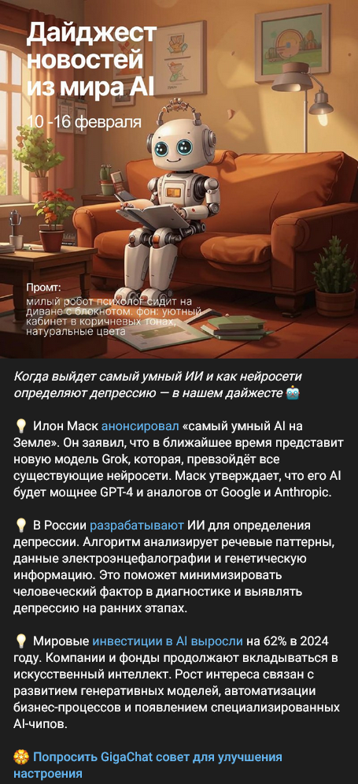
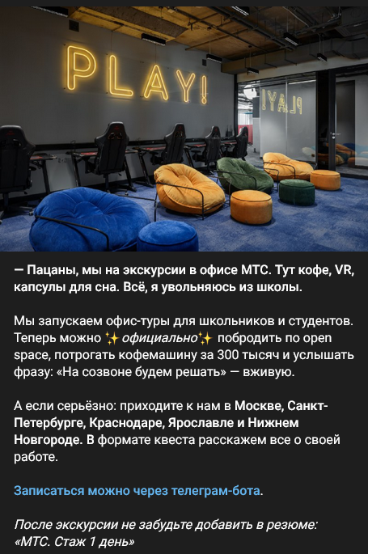

📧 igory345@gmail.com
Делаю контент по ТЗ: статьи, посты для соцсетей, тексты для сайтов. Самостоятельно изучаю тему, провожу фатчекинг, при необходимости задаю уточняющие вопросы редактору и эксперту.
Пишу как информационные материалы, так и рекламные тексты, адаптируя стиль под задачи и аудиторию. Согласовываю с редактором, могу сделать простую картинку или поставить техническое задание дизайнерам.
Тут подробнее про опыт и примеры работ👇
Задача: Написать статью для отраслевого издания SecurityMedia о подготовке ИБ-специалистов. Нужно было показать проблемы обучения людей в сфере информационной безопасности, объяснить изменения в требованиях к специалистам и показать новые подходы к их обучению.
Что я делал: Провел интервью с руководителем рекрутинга компании «Бастион», проанализировал тренды рынка ИБ-кадров и перевел технический материал в понятную статью.
Задача: Написать кейс-статью о крупной миграции с зарубежных фаерволов на российское решение UserGate. Нужно было показать техническую сложность проекта, преимущества отечественного ПО и убедить читателей в возможности быстрого перехода.
Что я делал: Изучил техническую документацию проекта и структурировал материал в понятную историю.
Задача: Написать экспертную статью о киберстраховании для компаний, которая объяснила бы актуальность этого инструмента в условиях роста киберугроз. Нужно было рассказать о теме управления цифровыми рисками и показать практическую пользу страхования.
Что я делал: Структурировал материал от базовых понятий до конкретных действий: что это → зачем нужно → как внедрить → что будет дальше. Перевел сложную финансовую тематику на понятный язык, подкрепил аргументы конкретными цифрами. Материал не был опубликован из-за изменения редакционной политики издания.
Задача: Создать информативную страницу для юридической фирмы, специализирующейся на гражданском праве. Нужно было объяснить сложные правовые концепции простым языком и показать практическую пользу услуг фирмы.
Что я делал: Разработал структуру страницы с акцентом на проблемы клиентов, создал понятные описания услуг, написал разделы о процессе работы и часто задаваемых вопросах. Использовал убедительные формулировки для повышения конверсии.
Задача: Подготовить кейс-статью о успешном судебном споре по взысканию крупной задолженности для юридической фирмы. Требовалось показать профессионализм команды и эффективность предлагаемых услуг.
Что я делал: Структурировал материал в формате истории успеха, подчеркнул ключевые моменты стратегии и результат для клиента. Добавил конкретные цифры и временные рамки для повышения доверия.
Задача: Создать продающий текст для лендинга фитнес-центра с адаптивными тренировками. Нужно было убедить целевую аудиторию записаться на тренировки, подчеркнув уникальность подхода.
Что я делал: Разработал структуру лендинга с упором на выгоды, написал заголовки, подзаголовки, тексты для блоков с преимуществами, тарифами и отзывами. Использовал языковые триггеры мотивации и создания срочности.
Задача: Создать лендинг для юридической компании, специализирующейся на строительных спорах с использованием ИИ. Требовалось представить инновационный подход к решению юридических задач.
Что я делал: Разработал технически точные, но понятные описания ИИ-технологий, создал структуру с акцентом на результаты и уникальность подхода. Написал тексты для разделов о команде, процессе работы и реализованных проектах.
Задача: Написать статью для сайта кадрового агентства о роли рекрутинговых компаний в кризисные периоды. Нужен был базовый SEO-текст.
Что я делал: Написал статью, показал практическую ценность услуг агентства в сложные времена.
Задача: Написать статью о ретро-контенте в социальных сетях для компании, которая занимается продвижением.
Что я делал: Написал материал, объяснил эмоциональные триггеры ностальгии. Использовал примеры из практики и структурировал советы по принципу "от теории к практике".
Задача: Написать обзорную статью о процессе разработки сайтов для веб-студии. Требовался SEO текст для непрофессиональной аудитории с описанием основных этапов работы.
Что я делал: Показал процесс, адаптировал профессиональную терминологию для обычных пользователей.
Задача: Написать пост-дайджест для Telegram-канала СберБизнес о новостях в сфере ИИ и технологий. Нужно было упаковать сложную техническую информацию в легко читаемый формат.
Что я делал: Нашел подходящие новости с русскоязычных и англоязычных источников. Каждую новость переписал в формате «что произошло + почему это важно», убрав технический жаргон. Создал картинку для поста.
Пример поста:
Задача: Создать пост для анонса новой программы офис-туров МТС для молодой аудитории (школьники и студенты). Нужно было привлечь внимание, показать компанию как современного и открытого работодателя, и при этом не скатиться в корпоративную официальность.
Что я делал: Выбрал «ироничный» формат. Структурировал пост так, чтобы переход от эмоционального крючка к практической информации был естественным, а призыв к действию не выглядел навязчиво.
Пример поста:
